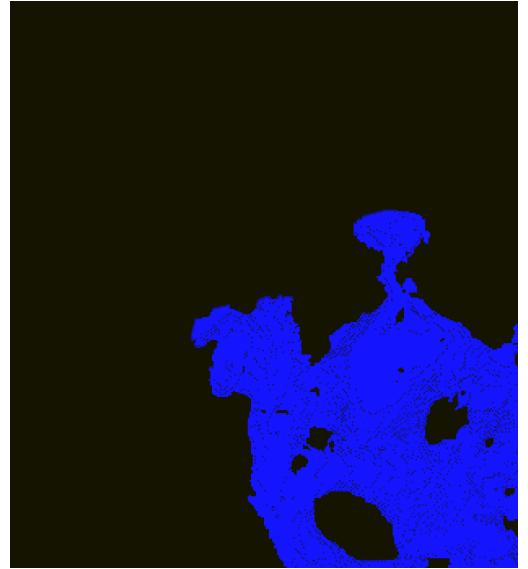
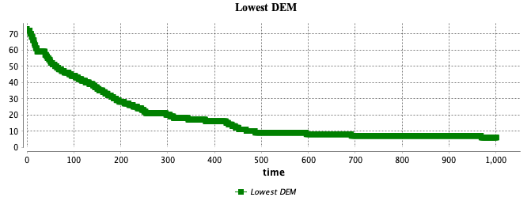
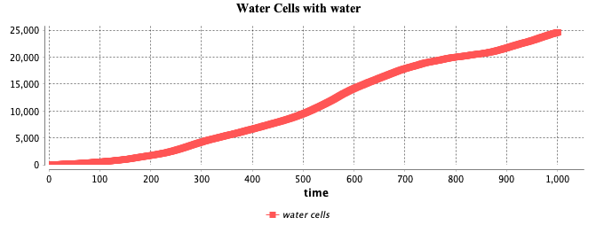

Water Runoff
Results
Cambridge is a city in the south-eastern part of the United Kingdom. The terrain is mostly flat and dry. As a result, flooding in and around the city is less likely. However, for the purposes of an experiment, this is a simulated result of what would happen if a waterfall affected the city (see Figure 1). As can be seen, the highest area is a cell in the bottom right corner, so the water fall would always begin there regardless of iterations.

Figure 2 depicts the water’s lowest elevation over time. The starting altitude is 73 metres above sea level, but as the water flows, the lowest altitude drops dramatically to 20 metres around the 300th time step, 10 metres at the 500th time step, and finally 6-7 metres after the 600th time step.

There are approximately 25,000 cells that contain water after 1000 time steps. As this map comprises 108,576 cells (312 x 348), it turns out that just over 23% of the spatial extent were affected by water run off.
